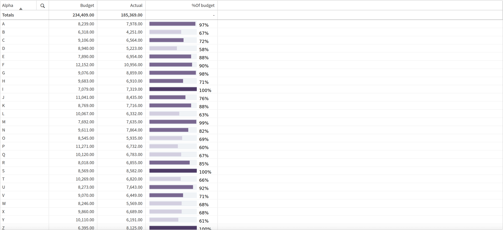
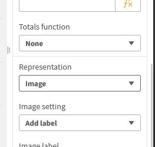

A table showing budget vs actual is useful. The same table with an inline bar that changes colour based on how close you are to target — and still sorts correctly and exports cleanly — is a lot more useful. Here's how to build it with a single expression and no extensions.

The key setting: Representation → Image
Before anything else — open the column settings for your measure and change Representation from Value to Image. Without this, Qlik shows the raw expression string instead of rendering the bar.

The expression
The expression uses Dual() to return two things at once: an inline SVG string
for the visual bar, and a numeric value for correct sorting and clean export.
Replace exp1 with your target/budget measure and exp2 with
your actual/achieved measure.
Dual(
'data:image/svg+xml,<svg xmlns="http://www.w3.org/2000/svg" height="12" width="150">'
// Background track (light grey)
& '<rect x="5" y="0" width="100" height="12" style="fill:%23F0F3F6" />'
// Foreground bar — width driven by ratio, colour driven by performance
& '<rect x="5" y="2" width="'
& Num(RangeMin(100, (exp2 / exp1) * 100), '0')
& '" height="8" style="fill:'
& If((exp2 / exp1) < 0.7, '%23D3CFE0',
If((exp2 / exp1) < 1, '%237A6891',
'%234F3C67'))
& '" />'
// Percentage label to the right of the bar
& '<text text-anchor="start" font-family="Source Sans Pro" font-size="9" fill="black">'
& '<tspan dominant-baseline="central" x="110" y="9">'
& Num(RangeMin(1, (exp2 / exp1)), '0%')
& '</tspan></text>'
& '</svg>',
// Numeric value used for sorting and export
Num((exp2 / exp1), '0%')
)Why Dual()?
Dual() stores two representations of the same value: a string and a number.
Qlik displays the string (the SVG bar) but uses the number for column sorting.
Without it, sorting would be alphabetical on the SVG string, which is meaningless.
How the colours work
The three colours are not track/fill/label — they're performance states. The bar colour changes automatically based on how the actual compares to the target:
| Color | Hex | Condition | Meaning |
|---|---|---|---|
| Track | #F0F3F6 |
Always | Background of the bar |
| Light | #D3CFE0 |
actual / budget < 0.7 | Under 70% — needs attention |
| Mid | #7A6891 |
0.7 ≤ ratio < 1.0 | 70–99% — on the way |
| Dark | #4F3C67 |
ratio ≥ 1.0 | At or above target |
# in colour codes must be written as %23 inside the SVG string —
otherwise Qlik treats it as a variable reference and the colour breaks silently.
Alternative colour palettes
Each palette below uses the same three-state structure: under 70% / 70–99% / at target.
Copy the three %23-encoded values and replace the corresponding colours in the expression.
<70% %23F5DCDB
70–99% %23E07B5F
≥100% %232D7A2D
<70% %23CFD8E0
70–99% %234A7BA8
≥100% %231A3A5C
<70% %23CFE0CF
70–99% %235A8060
≥100% %231E4D26
<70% %23E0D8CF
70–99% %23A87B4A
≥100% %235C3A1E
<70% %23CFE0DF
70–99% %234A9894
≥100% %231A4D4B
<70% %23E0E0E0
70–99% %23888888
≥100% %23222222
Limitations
The biggest one to be aware of: this does not export to Excel.
When a user exports the table, the column will contain the raw SVG string instead of the bar —
something like data:image/svg+xml,<svg xmlns=.... It's not useful and
it can confuse end users who expect a clean spreadsheet.
If Excel export is a requirement for your users, consider keeping the percentage as a
separate plain measure column alongside the bar, so at least the number comes through cleanly.
The Dual() numeric value will export correctly in some clients, but the visual
bar itself is always lost outside of Qlik.